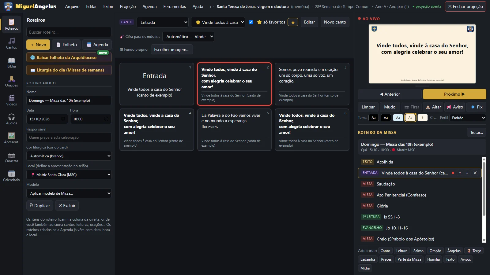
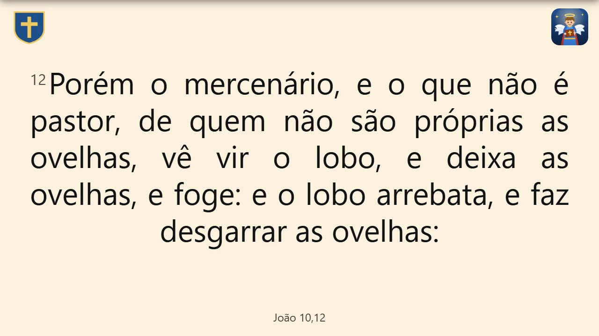
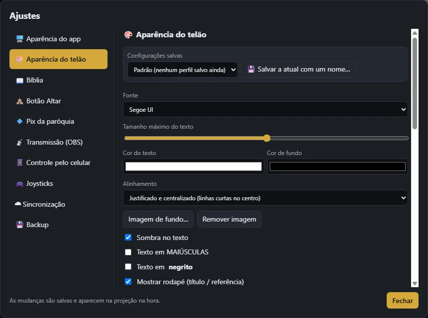
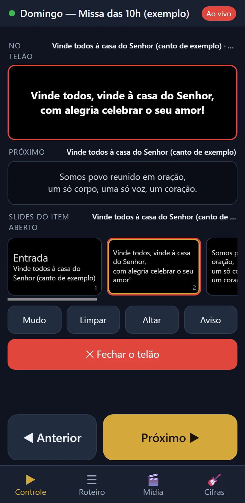
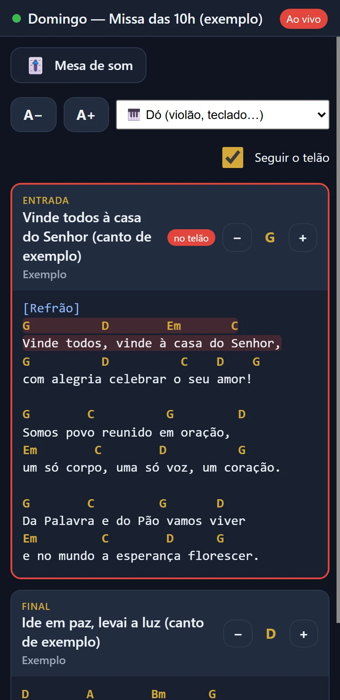
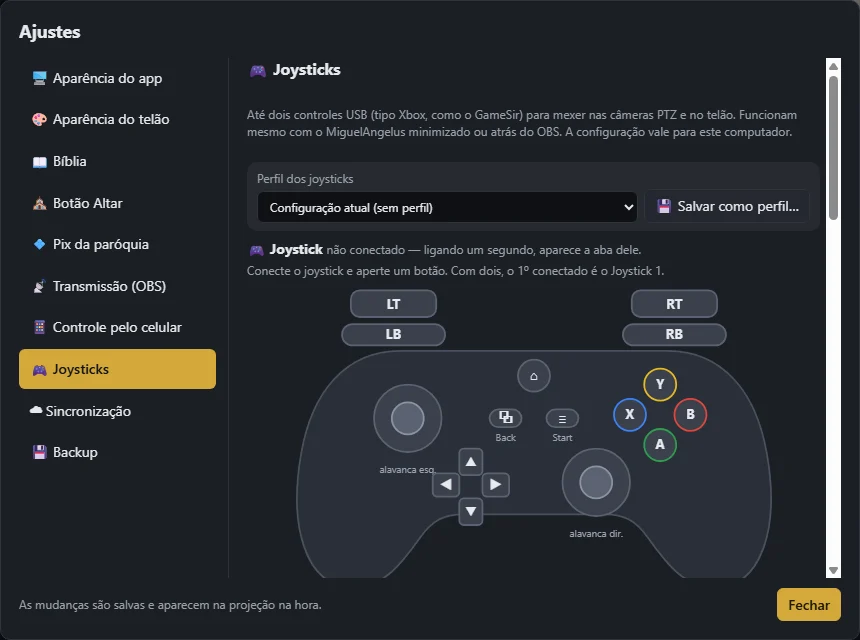
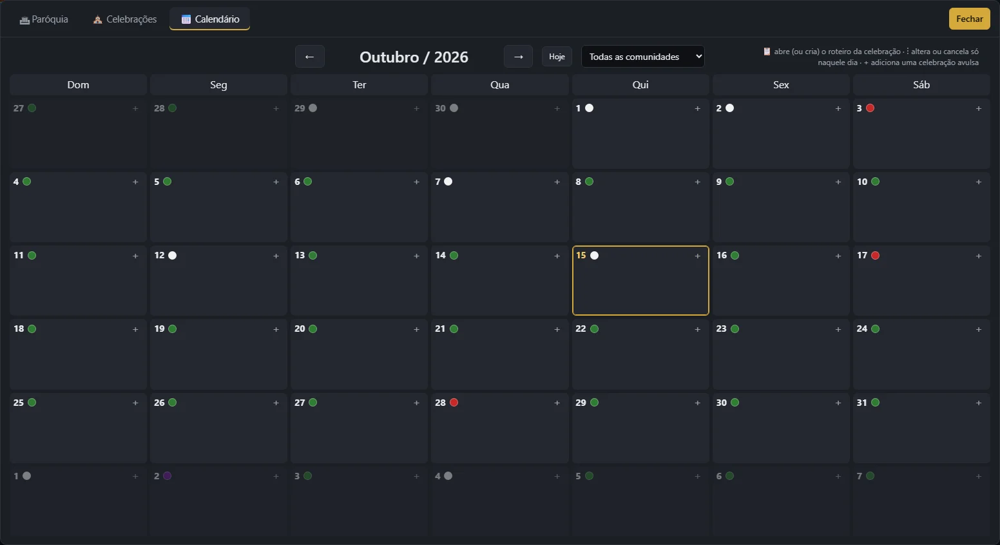
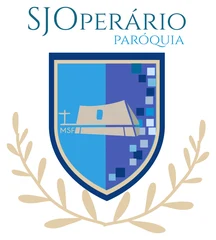
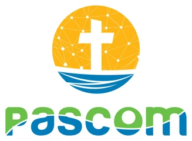

Projeção para a Missa, simples e feita para a liturgia católica
O MiguelAngelus é um aplicativo gratuito para Windows que a PASCOM usa para projetar a Missa no telão: lê o folheto da semana e monta o roteiro com cantos, leituras, salmo, orações e avisos — e o telão pode ser controlado pelo celular.
Sempre a versão mais nova · Windows 10 e 11 · instalador assinado digitalmente · as próximas versões chegam sozinhas pelo próprio programa.

O que ele faz
📄 Roteiro a partir do folheto
Lê o folheto da Missa (PDF, Word ou texto) — ou baixa o da sua arquidiocese — e monta o roteiro inteiro, com as falas do padre e do povo.
🎵 Cantos com cifras
Cantos por momento da Missa, refrão repetido sozinho, cantado ou rezado (Glória, Sequências, Ladainhas) e cifras para os músicos.
📖 Bíblia e liturgia
Bíblia católica completa já incluída, calendário litúrgico com santos, cor do tempo, Terço, Ângelus e as partes fixas da Missa.
📱 Controle pelo celular
Leia o QR code e passe os slides andando pela igreja. Os músicos veem a cifra que acompanha o telão, no tom do instrumento.
🎨 Telão do seu jeito
Temas (inclusive pela cor do tempo litúrgico), perfis para cada operador, brasão e padroeiro nos cantos da tela.
📷 Câmeras e joysticks
Câmera ao vivo no telão e câmeras PTZ com posições prontas — pelo computador, pelo celular ou por um joystick USB.
📡 Transmissão
Faixa com as letras para o OBS (NDI), por cima da câmera da transmissão — inclusive o QR code do Pix da paróquia.
☁ Vários computadores
Opcionalmente, guarda tudo no Google Drive da própria paróquia para usar na Matriz e nas capelas.
Veja como fica
Fotos com uma paróquia de exemplo (o canto é fictício; o Evangelho é da Bíblia de domínio público que vem com o programa).






Como instalar
- Baixe o instalador (Instalar-MiguelAngelus.exe).
- Abra o arquivo e siga o instalador. Ele é assinado digitalmente por Open Source Developer Marcio Aurelio Rios Martins.
- Abra o MiguelAngelus pelo ícone. Com um segundo monitor ou projetor ligado, a janela do telão vai sozinha para ele.
- Comece por Ajuda → Manual do MiguelAngelus (tecla F1): ele vem junto com o programa, com fotos de cada tela.
Precisa de Windows 10 ou 11 (64 bits). As novas versões aparecem sozinhas ao abrir o programa. A transmissão para o OBS usa o NDI Tools (gratuito); o resto funciona sem instalar mais nada.
Sobre o projeto
Miguel + Angelus ("anjo", em latim): o nome é uma homenagem ao Miguel, que idealizou e criou esse projeto, e a São Miguel Arcanjo, cuja festa foi na semana em que o programa nasceu. O MiguelAngelus é gratuito e foi feito para uso da Paróquia São José Operário (Rio de Janeiro) e de suas capelas — e está aberto para outras paróquias.
Ele funciona no próprio computador, sem servidor. Quando a sincronização com o Google Drive está ligada, os arquivos ficam no Drive da conta da paróquia; ninguém mais tem acesso a eles. Veja a política de privacidade.
O código do MiguelAngelus é aberto (licença MIT) e está no GitHub: github.com/dobylucky78-droid/miguelangelus.
Contato: pascom.sjo.holyrics@gmail.com
Siga a Paróquia São José Operário

